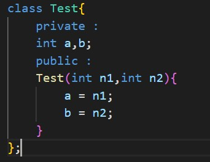
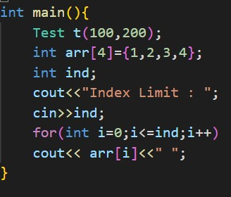

You may already be aware that C language is vulnerable to various type of attacks such as buffer overflow, stack smashing ,etc . The root cause for most vulnerabilities in C rise from the use of pointers. C++ is considered to be more secure as it supports object oriented programming and thereby provides data abstraction and security.But C++ supports C style pointers,for backwards compatibility.Use of pointers in C++ along with classes and objects makes object oriented programming principles meaningless.
Let's look into a simple example
Access specifiers allows us to selectively limit the accessibility of some members of a class.
But pointers can be exploited to access the private and protected members of a class.
Consider a class Test

Driver Code

Output:
Index Limit : 5
1 2 3 4 100 200
An instance of the class Test is created in the stack followed by an integer array .
The base address of the array is stored in the variable arr which resides in the stack.
Driver code prompts the user to enter the number of elements to be displayed. If a
user inputs a number that execeeds the index limit of the array such as 5, and if the input
is not handeled properly,the private members of object t will be exposed.
This is because all the data members of an object,irrespective of being public or private are stored in stack in the same order as it is declared in the class. If you try to access private and protected members explicitly in the program,complier throws errors. But we can very well access them using pointers during runtime.This is an example of stackoverflow.
This might not be a real world example, But there are cases where C style pointers,integer arrays,charcter arrays are used
in c++ programs,which is a bad practice and opens a lot of attack vectors in real world applications.
The above scenario can be avoided by